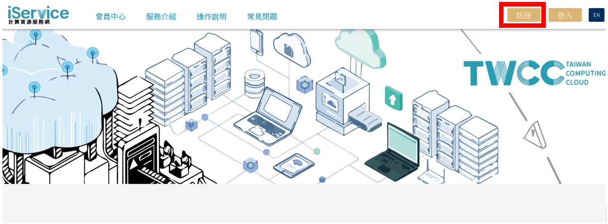
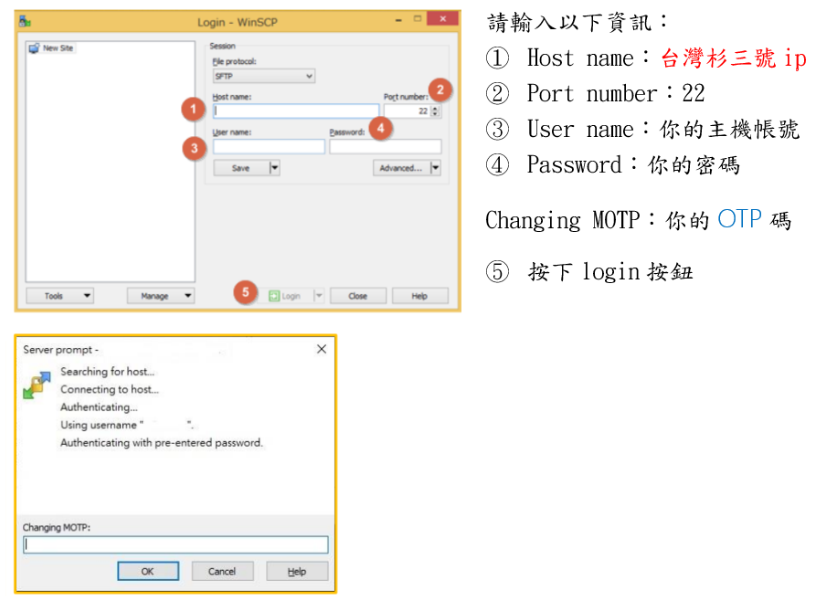
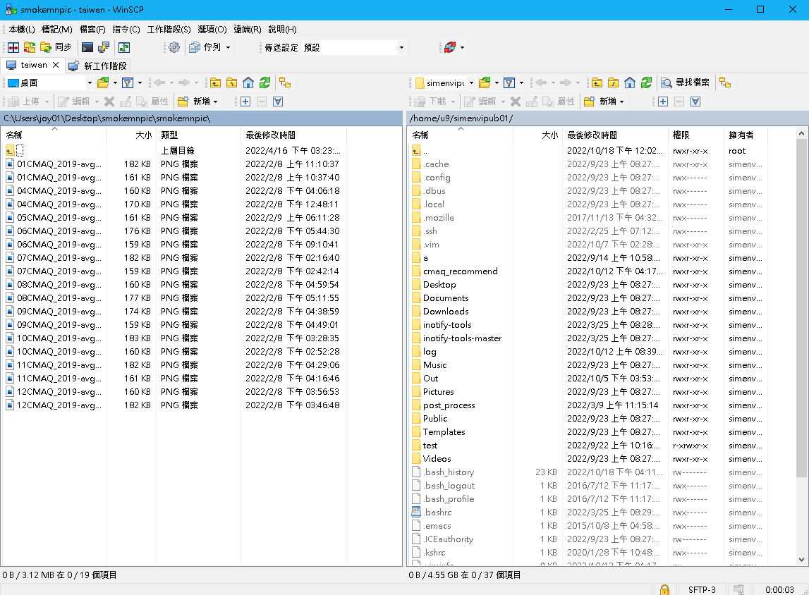

-
-
:::
模式資料查詢
社群分享大綱
根據空氣品質模式模擬規範第十一條的規定，公私場所申請固定污染源許可時，應將空品模式與模擬結果公開於中央主管機關規定之網站，以備各界查詢。 然而模式資料雖然存放網路上，但由於相當龐大，且目前存放模式資料的主機為國家高速網路與計算中心（以下簡稱國網）的主機，並不適合直接線上查詢，而是從國網下載到自己慣用電腦後再行查閱，才是比較適宜的方法。以下說明國網帳號申請方法、下載模式資料的方法以及下載資料路徑，使用者下載資料後，可使用適當的軟體讀取資料並查閱。
國網帳號申請方法說明
欲上傳或下載資料者，皆需在國網申請帳號使用，國網帳號申請不需要費用，請依照下面條列的步驟申請：
1. 進入iService計算資源服務網 [另開新視窗]
2. 選取下圖紅框框起之右上角註冊按鈕

3. 輸入電子信箱並閱讀個資和權利義務聲明
4. 填寫會員基本資料
5. 收取認證信和驗證簡訊
6. 驗證成功即帳號申請完畢
國網下載資料方法
從國網下載資料可分為以下兩種主要的方法，以下分別說明這兩種下載方法：
一、 使用linux指令下載
於自己的linux主機執行以下任一種指令：
1. scp 指令
-
$ scp [option:] <source host>:<remote patd of directory or file> <destination host>:<local patd of directory or file>
2. rsync 指令
-
$ rsync [option:] <source host>:<remote patd of directory or file> <destination host>:<local patd of directory or file>
option: 指令使用選項
-
- source host : 國網帳號@台灣杉三號資料傳輸節點 (t3-x1.nchc.org.tw 或
t3-x2.nchc.org.tw) - remote patd of directory or file : 欲下載資料的國網路徑
- destination host : 下載目標主機(如為下載至本機可不輸入)
- local patd of directory or file : 檔案下載目標路徑
- source host : 國網帳號@台灣杉三號資料傳輸節點 (t3-x1.nchc.org.tw 或
二、 使用第三方軟體下載（以winSCP為例）
開啟winSCP程式後在登入介面依下圖輸入內容：
登入後頁面如下，雙擊右半視窗路徑列，輸入欲下載檔案路徑，或至/work/simenvipub01/ 資料夾中自行搜尋目標檔案，右鍵點選欲下載檔案即開始下載。

下載資料路徑說明
資料公開之模擬結果檔案儲存於國網台灣杉三號主機中，台灣杉三號主機檔案傳輸ip為 t3-x1.nchc.org.tw 或 t3-x2.nchc.org.tw，檔案路徑包含「共通路徑/縣市/案件類型/模式分類/案號」等五個部分：
1. 共通路徑，為公開資料的共通檔案儲存路徑
/work/simenvipub01/upload/
2. 縣市資料夾選項，依照不同縣市的案件輸入資料夾名稱，如下表
3. 案件類型選項，選項包含環境影響評估（assess/）、減量或控制策略評估（control/）、
許可申請（permit/）和其他類型（other/）
4. 模式分類，分為公告模式（recommend/）、非公告模式（alternative/）和其他（other/）
5. 案號則依縣市環保局命名
共通路徑 機關單位選項 機關單位選項說明 案件類型選項 案件類型選項說明 模式分類 模式分類選項說明 案號 /work/simenvipub01/upload/ 00/ 中央 assess/ 環境影響評估 recommend/ 公告模式 依縣市環保局命名 01/ 臺北市 02/ 高雄市 11/ 基隆市 12/ 新竹市 17/ 臺中市 21/ 臺南市 control/ 減量或控制策略評估 22/ 嘉義市 alternative/ 非公告模式 31/ 新北市 32/ 桃園市 33/ 新竹縣 34/ 宜蘭縣 permit/ 許可申請 35/ 苗栗縣 37/ 彰化縣 38/ 南投縣 other/ 其他 39/ 雲林縣 40/ 嘉義縣 other/ 其他 43/ 屏東縣 44/ 澎湖縣 45/ 花蓮縣 46/ 臺東縣 101/ 國家科學及技術委員會新竹科學園區管理局 102/ 國家科學及技術委員會中部科學園區管理局 103/ 國家科學及技術委員會南部科學園區管理局 201/ 經濟部加工出口區管理處 202/ 行政院農業委員會屏東農業生物技術園區籌備處
範例路徑及說明：
/work/simenvipub01/upload/21/permit/recommend/R0900017-M01-1091117
為臺南市的許可申請，使用公告模式的案件R0900017-M01-1091117
-


")